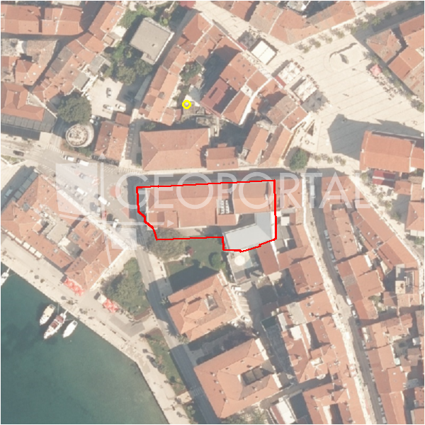

#38804 · Kombinirano zemljište na prodaju Poreč
Poreč, Poreč, Istarska · zemljiste · njuskalo · status active · oglas ↗
Ocjena
- Score
- 58 rule 58 · LLM – · 12.09.2026.
- RLV
- 387.000 € (229 €/m²) · ratio 2,58
- Ukupna investicija
- 3,49 M€
- GBP
- 1.356 m²
- Feedback
- –
- CRM
- –
Sažetak: Prodaje se kombinirano zemljište od 2100 m² kod Svetog Lovreča u Poreštini, od čega je 1500 m² građevinsko a 600 m² negrađevinsko, uz asfaltiranu prometnicu i infrastrukturu u blizini. Zemljište je pogodno za naknadnu parcelaciju na dvije parcele za vile s bazenom, no to još nije provedeno.
Oglas
- Cijena
- 150.000 € (71 €/m²)
- Površina
- 2.100 m² · DKP 1.695 m² (odstupanje -19,3 %)
- Prodavatelj
- agencija · Kvintet Agencija za nekretnine
- Prvi put
- 11.09.2026. · zadnje 11.09.2026. · 0 d na tržištu
Povijest cijene
| Datum | Cijena |
|---|---|
| 11.09.2026. | 150.000 € |
Flagovi
zop_70_100 ZOP pojas 70/100 m (−10)zone_uncertainty zona nije pregledana (reviewed: false) (−5)
llm_pending LLM ekstrakcija/ocjena nedostupna
Komponente score-a
| rlv | {'gbp': 1355.7600000000002, 'kis': 0.8, 'nkp': 1016.8200000000002, 'noi': None, 'rlv': 387496.8391304354, 'ratio': 2.5833122608695693, 'value': None, 'phases': 1, 'profile': 'obala_visestambeno', 'gdv_neto': 4474008.000000001, 'cost_soft': 135576.00000000003, 'gdv_bruto': 5592510.000000001, 'kis_known': False, 'total_inv': 3494169.6000000006, 'cost_build': 2711520.0000000005, 'cost_other': 488073.6000000001, 'cost_sales': 167775.30000000002, 'demolition': False, 'gbp_source': 'kis', 'rlv_per_m2': 228.6521739130438, 'parcel_area': 1694.7, 'parcelation': False, 'roi_on_cost': 0.23240517575334643, 'profit_at_ask': 812063.1000000003, 'cost_demolition': 0.0, 'total_inv_phase': 3494169.6000000006, 'parcel_area_effective': 1694.7, 'sale_price_per_m2_nkp': 5500.0} |
| hard | [] |
| info | ['llm_pending'] |
| rubric | {'permits': {'max': 5.0, 'detail': {'permit': 'none'}, 'points': 0.0}, 'location': {'max': 15.0, 'detail': {'source': 'rlv.yaml:istra_zapad/row2', 'sale_price_per_m2_nkp': 5500.0}, 'points': 11.5}, 'physical': {'max': 4.0, 'detail': {'slope_pct': 11.18, 'slope_points': 1.8820000000000001}, 'points': 1.88}, 'liquidity': {'max': 3.0, 'detail': {'n_cuts': 0, 'points_cut': 0.0, 'points_days': 0.008333333333333333, 'seller_type': 'agencija', 'points_fresh': 0.5, 'price_cut_pct': None, 'days_on_market': 1, 'points_private': 0}, 'points': 0.51}, 'rlv_ratio': {'max': 25.0, 'detail': {'rlv': 387497, 'ratio': 2.583, 'asking_price': 150000.0}, 'points': 25.0}, 'ticket_fit': {'max': 10.0, 'detail': {'asking_price': 150000.0}, 'points': 4.0}, 'zone_quality': {'max': 8.0, 'detail': {'reason': 'zona nepoznata', 'source': 'nepoznato', 'zone_class': None}, 'points': 2.0}, 'profit_potential': {'max': 20.0, 'detail': {'roi_on_cost': 0.232, 'profit_at_ask': 812063}, 'points': 18.5}, 'price_vs_benchmark': {'max': 10.0, 'detail': {'source': 'auto:Poreč', 'deviation': 0.589, 'ask_eur_m2': 71, 'benchmark_eur_m2': 173.89}, 'points': 10.0}} |
| weights | {'llm': 0.4, 'rule': 0.6, 'model': 0.0} |
| penalties | {'zop_70_100': 10, 'zone_uncertainty': 5} |
| raw_score | 73,4 |
| rlv_notes | [] |
| flag_notes | {'max_gbp': 1356, 'zop_band': '70', 'total_inv': 3494170, 'zone_code': None, 'zone_class': None, 'zone_source': 'nepoznato', 'zone_reviewed': None} |
| caps_applied | [] |
GIS
- Čestica
- k.o. 323748, k.č. 566 (pin_buffer, 0,70); k.o. 323748, k.č. 655/1 (pin_buffer, 0,67); k.o. 323748, k.č. 654 (pin_buffer, 0,66)
- Zona
- – (–)
- kig / kis / katnost
- – / – / –
- GP / UPU
- – · UPU –
- Pristup / nagib
- unknown · 11,2 % (max 27,8 %)
- More
- 52 m · red 2 · ZOP 70
- Zaštite
- Natura ne · zaštićeno ne · kulturno dobro ne
- Zgrade na čestici
- 57 %
- Match
- 0,70
Karta
Ortofoto (DOF)

RLV kalkulacija — pretpostavke
| gbp | {'value': 1355.7600000000002, 'source': 'kis'} |
| kis | {'value': 0.8, 'source': 'default_profila'} |
| sea_row | {'value': '2', 'source': 'gis'} |
| soft_pct | {'value': 0.05, 'source': 'profil'} |
| nkp_ratio | {'value': 0.75, 'source': 'profil'} |
| cost_other | {'value': 488073.6000000001, 'source': 'profil: doprinosi+uređenje po m² GBP, financiranje+rezerva % gradnje'} |
| parcel_area | {'value': 1694.7, 'source': 'dkp'} |
| asking_price | {'value': 150000.0, 'source': 'oglas'} |
| margin_on_cost | {'value': 0.15, 'source': 'profil'} |
| build_cost_per_m2_gbp | {'value': 2000.0, 'source': 'profil'} |
| sale_price_per_m2_nkp | {'value': 5500.0, 'source': 'rlv.yaml:istra_zapad/row2'} |
| transfer_tax_and_acquisition | {'value': 0.06, 'source': 'profil'} |
Ekstrakcija iz oglasa
| permit | none |
| access_road | yes |
| sea_row_claim | none |
| building_on_parcel | none |
Benchmarks mikrolokacije
| Vrsta | Vrijednost | n | Od | Izvor |
|---|---|---|---|---|
| land_ask_eur_m2 | 174 | 302 | 11.09.2026. | auto |
| newbuild_sale_eur_m2_nkp | 3.695 | 8 | 11.09.2026. | auto |
Opis oglasa
Zemljište od 2.100 m2, od čega je 1.500 m2 građevinsko, a 600 m2 negrađevinsko koje može biti iskorišteno za parking. U mirnom selu je parcela kod Svetog Lovreča na 15 minuta od plaža, Rovinja i Poreča. Nalazi se do asfaltirane prometnice. Sva infrastruktura je u neposrednoj blizini. Idealnih je proporcija. Pogodno i za parcelaciju na dvije parcele za vile s bazenom. ID KOD AGENCIJE: 3425 KVINTET agencija za nekretnine Tel: +385 52 237 268 Mob: +385 99 4930 118 Mob: +385 91 4930 118 Mob: +385 91 5238 772 E-mail: kvintet.croatia@gmail.com Web: https://www.kvintet.hr Originalni oglas: https://www.kvintet.hr/?searchid=3425 Uvjeti poslovanja: Agencijska provizija naplaćuje se u skladu s Općim uvjetima poslovanja: https://www.kvintet.hr/hr/opći-uvjeti